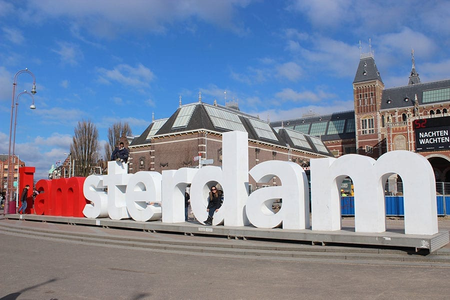
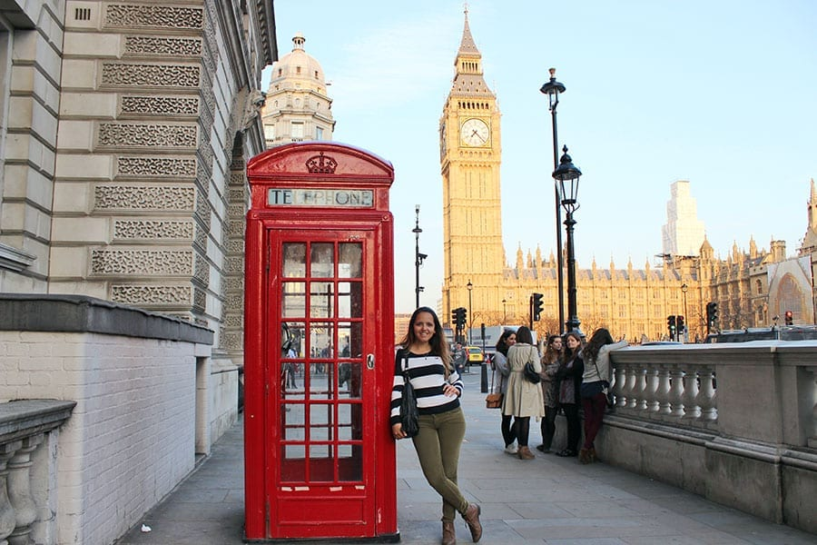
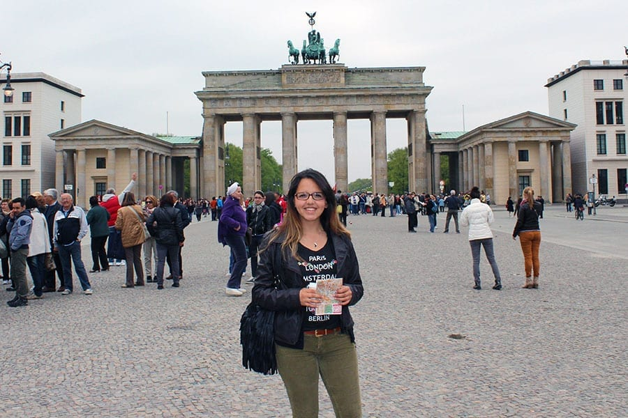
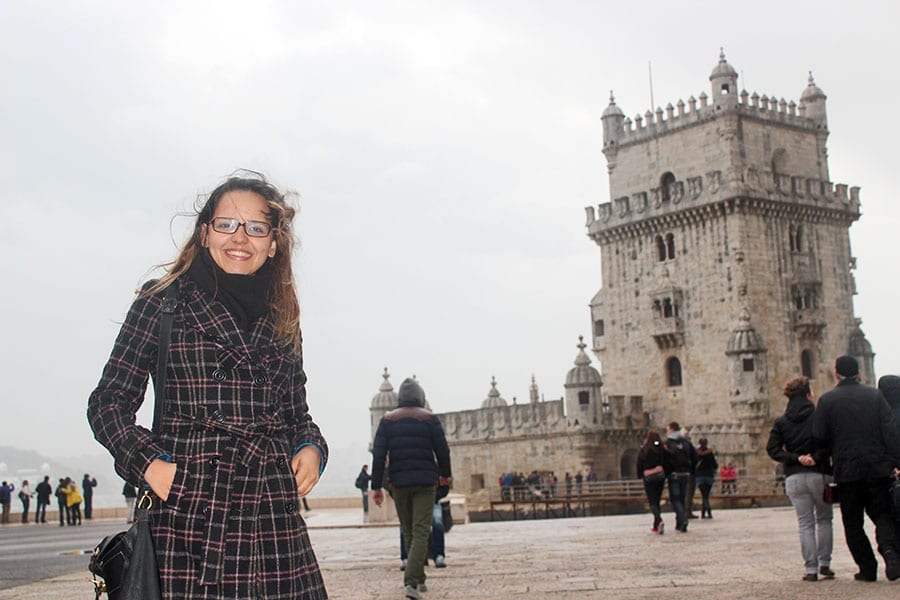

Coliseu de Roma

O principal ponto turístico da Itália é sem dúvida o Coliseu de Roma.
É um dos monumentos mais famosos do mundo e atrai nada menos do que 4
milhões de turistas todos os anos. Sua construção se iniciou no ano de
72 d.C. e durante décadas, serviu de palco para gladiadores que
lutavam entre si ou com animais para um público de mais de 70 mil
romanos.
Torre Eiffel em Paris

É claro que a Torre Eiffel de Paris não poderia estar fora dessa
lista. Construída em 1889, ela conta com 325 metros de altura e 1.665
degraus, e você não pode deixar de visitá-la quando estiver em Paris.
Vista de diversas partes da capital francesa, a Torre Eiffel é um
marco de como um monumento pode tornar-se um símbolo de uma nação.
Museumplein em Amsterdã

Um lugar que não pode ficar de fora da lista de pontos turísticos da
Europa é o Museumplein em Amsterdã, conhecido como a Praça dos Museus.
É lá que estão os museus mais famosos de Amsterdã e da Holanda, que
são o Museu Rijksmuseum, o Museu Van Goghe e o Museu Stedelijk. Se for
priorizar, não deixe de ir no Museu Van Goghe, que é o maior acervo de
obras do artista no mundo.
Big Ben em Londres

Outro ponto turístico famoso e um dos símbolos da Europa é o Big Ben
de Londres. É no Big Ben que está instalado o parlamento inglês e é
parada obrigatória para qualquer turista que visita a cidade de
Londres e a Inglaterra, independente da época.
Portão de Brandemburgo em Berlim

O principal ponto turístico de Berlim e da Alemanha é sem dúvida o
Portão de Brandemburgo de Berlim, que é o símbolo mais importante da
cidade e mais procurado pelos turistas. É um dos monumentos mais
importantes da Alemanha e mais simbólicos da história do século XX e
da Europa. Além de ser uma obra prima da arquitetura alemã, ele é
símbolo da separação das duas Alemanhas, que eram divididas pelo Muro
de Berlim.
Torre de Belém em Lisboa

A Torre de Belém fica em Lisboa e é considerada o principal ponto
turístico de Portugal e um dos mais visitados da Europa. A Torre de
Belém em Lisboa foi construída na era de ouro de Portugal, época das
navegações, com o objetivo de proteger a cidade de invasores.